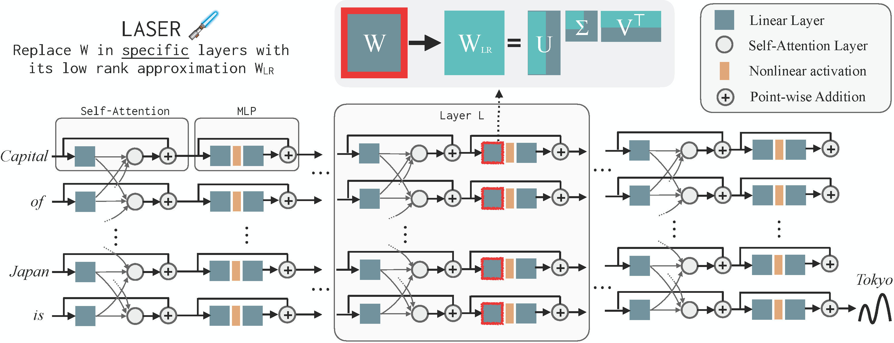

LASER (LAyer SElective Rank-Reduction) is an intervention strategy for Large Language Models that was introduced in the Paper The Truth Is In There: Improving Reasoning in Language Models with Layer-Selective Rank Reduction, (Sharma, Ash, and Misra, arXiv 2023). As the name suggests, LASER replaces selected weight matrices in an LLM with their low-rank approximation (which can be thought of as a way to compress information). The key surprising finding of the paper was that given a task, if we do LASER interventions properly, these reductions improve the performance of the LLM on that task, at times by 20-30 percentage points. Figure below visualizes LASER intervention in an LLM.
The findings also show that improvements typically come from performing LASER in the MLP weight matrices in the latter half of the LLM. These results also didnt seem restricted to just LLM and were observed in Decision Transformers in an RL task.
There are lots of open questions in this space and several possible ways to extend these results. A goal of this webpage is to contain a leaderboard with results on various benchmarks, and LLMs along with evaluating different modifications to LASER. The code is open source (MIT license) and we welcome contributions. The GitHub Page contains instructions for running LASER. We also provide a short installation snippet below:
# Clone the Laser code
git clone https://github.com/pratyushasharma/laser.git
# (Optional) create a conda environment.
conda create -n Laser python=3.8 -y
conda activate Laser
# Install Requirements
pip3 install -r requirements.txt
pip install -e .
# Run a sample experiment (E.g., try GPTJ on Bios Gender dataset with a chosen LASER intervention)
python3 intervention_llama2_bios.py --lname fc_in --rate 9.9 --lnum 26
Does LASER require training? To perform a single LASER intervention, you do need to select 3 scalar hyperparameters: the layer to edit, the parameter type to edit and the amount of reduction to do. We typically find that doing significant reduction on the later layers (often times the last) of MLP parameters often works. Most recently, we found that doing this on Phi-1.5 LLM on the CounterFact dataset, immediately gave a 5-6 percentage point improvement without any fine-tuning. However, this is not always the case. See Table 3 for list of optimal hyperparameters.
Can LASER reduce memory cost? LASER can indeed reduce memory footprint. Given a nxn matrix whose rank is reduced to 1% of maximum rank, we get a memory reduction down to roughly 2% of the orignal. However, currently the code doesnt support this memory reduction feature. We aim to support it soon.
Can LASER be applied to a (some LLM name) LLM? One can apply LASER to any LLM. We will release a tutorial soon to show how to do so. In fact, it can also be applied to other transformer architectures, and in principle, any deep neural network. Our code, however, currently only supports Llama2, GPT-J, Phi-1.5, Decision Transformer and Roberta. If your LLM is on HuggingFace, then it should be very easy to modify the code to apply LASER to the LLM. Finally, while we observed improvements with LASER across several benchmarks and LLMs, there is currently no mathematical guarantee that this will always happen. We encourage you try and paste results and add to the community knowledge (see the next question).
I have a new result/found a way to improve LASER We welcome such contributions. Please send us either an email or contribute to Github discussion and we will add the results to the leaderboard below unless you tell us not to.
Following are results with LASER on various public benchmarks. If you have a result and want to be cited here, then please raise a Github issue here or send an email to one of the authors. We specially welcome modifications to LASER.
CounterFact dataset (script to get dataset)
| Base Model Name | Base Model Accuracy (Log Loss) | Laser Accuracy Log Loss) | Laser Hyperparameters (τ, ℓ, ρ) | Credit and Description |
|---|---|---|---|---|
| Roberta (12 layers, 355M) | 17.3 (5.78) | 19.3 (5.43) | [Uin, 8, 0.8] | from the original LASER paper |
| GPT-J (28 layers, 6B) | 13.1 (5.78) | 24.0 (5.05) | [Uin, 27, 0.01] | from the original LASER paper |
| Llama2 (32 layers, 7B) | 35.6 (3.61) | 37.6 (3.49) | [Uin, 28, 0.05] | from the original LASER paper |
Hotpot QA (script to get dataset)
| Base Model Name | Base Model Accuracy (Log Loss) | Laser Accuracy (Log Loss) | Laser Hyperparameters (τ, ℓ, ρ) | Credit and Description |
|---|---|---|---|---|
| Roberta (12 layers, 355M) | 6.1 (10.99) | 6.7 (10.55) | [Uout, 2, 0.4] | from the original LASER paper |
| GPT-J (28 layers, 6B) | 19.6 (3.40) | 19.5 (3.39) | [Uin, 27, 0.1] | from the original LASER paper |
| Llama2 (32 layers, 7B) | 16.5 (3.15) | 17.2 (2.97) | [Uin, 27, 0.2] | from the original LASER paper |
Fever (script to get dataset)
| Base Model Name | Base Model Accuracy (Log Loss) | Laser Accuracy (Log Loss) | Laser Hyperparameters (τ, ℓ, ρ) | Credit and Description |
|---|---|---|---|---|
| Roberta (12 layers, 355M) | 50.0 (2.5) | 52.3 (1.76) | [Uin, 3, 0.4] | from the original LASER paper |
| GPT-J (28 layers, 6B) | 50.2 (1.24) | 56.2 (1.27) | [Uin, 24, 0.01] | from the original LASER paper |
| Llama2 (32 layers, 7B) | 59.3 (1.02) | 64.5 (0.91) | [Uin, 30, 0.2] | from the original LASER paper |
Bios Gender (script to get dataset)
| Base Model Name | Base Model Accuracy (Log Loss) | Laser Accuracy (Log Loss) | Laser Hyperparameters (τ, ℓ, ρ) | Credit and Description |
|---|---|---|---|---|
| Roberta (12 layers, 355M) | 87.5 (0.87) | 93.7 (1.13) | [Uin, 9, 0.9] | from the original LASER paper |
| GPT-J (28 layers, 6B) | 70.9 (3.86) | 97.5 (4.20) | [Uin, 14, 0.01] | from the original LASER paper |
| Llama2 (32 layers, 7B) | 75.5 (3.48) | 88.4 (2.98) | [Uin, 24, 0.01] | from the original LASER paper |
Bios Profession (script to get dataset)
| Base Model Name | Base Model Accuracy (Log Loss) | Laser Accuracy (Log Loss) | Laser Hyperparameters (τ, ℓ, ρ) | Credit and Description |
|---|---|---|---|---|
| Roberta (12 layers, 355M) | 64.5 (4.91) | 72.5 (6.44) | [Uin, 3, 0.9] | from the original LASER paper |
| GPT-J (28 layers, 6B) | 75.6 (4.64) | 82.1 (4.91) | [Uin, 18, 0.01] | from the original LASER paper |
| Llama2 (32 layers, 7B) | 85.0 (4.19) | 86.7 (4.05) | [Uout, 30, 0.4] | from the original LASER paper |
TruthfulQA (script to get dataset)
| Base Model Name | Base Model Accuracy (Log Loss) | Laser Accuracy (Log Loss) | Laser Hyperparameters (τ, ℓ, ρ) | Credit and Description |
|---|---|---|---|---|
| Roberta (12 layers, 355M) | 56.2 (1.60) | 56.2 (1.42) | [Uin, 0, 0.01] | from the original LASER paper |
| GPT-J (28 layers, 6B) | 54.9 (1.02) | 55.6 (1.01) | [Uin, 7, 0.8] | from the original LASER paper |
| Llama2 (32 layers, 7B) | 50.5 (0.95) | 56.2 (1.04) | [Uin, 30, 0.05] | from the original LASER paper |
BigBench-Epistemic Reasoning (script to get dataset)
| Base Model Name | Base Model Accuracy (Log Loss) | Laser Accuracy (Log Loss) | Laser Hyperparameters (τ, ℓ, ρ) | Credit and Description |
|---|---|---|---|---|
| Roberta (12 layers, 355M) | 37.1 (9.39) | 41.8 (6.80) | [Uout, 1, 0.4] | from the original LASER paper |
| GPT-J (28 layers, 6B) | 37.1 (0.74) | 38.3 (0.62) | [Uin, 26, 0.01] | from the original LASER paper |
| Llama2 (32 layers, 7B) | 44.8 (0.78) | 63.4 (0.73) | [Uout, 28, 0.01] | from the original LASER paper |
BigBench-WikidataQA (script to get dataset)
| Base Model Name | Base Model Accuracy (Log Loss) | Laser Accuracy (Log Loss) | Laser Hyperparameters (τ, ℓ, ρ) | Credit and Description |
|---|---|---|---|---|
| Roberta (12 layers, 355M) | 28.0 (9.07) | 30.7 (7.69) | [Uin, 7, 0.4] | from the original LASER paper |
| GPT-J (28 layers, 6B) | 51.8 (3.52) | 65.9 (2.86) | [Uin, 27, 0.01] | from the original LASER paper |
| Llama2 (32 layers, 7B) | 59.5 (2.40) | 62.0 (2.31) | [Uin, 27, 0.01] | from the original LASER paper |
Authors are listed in the order in the paper below.